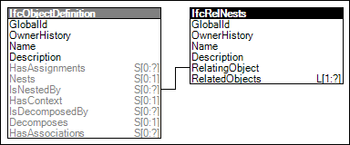

Link to this page
Link to this pageA nesting indicates an external ordered part composition relationship between the hosting structure, referred to as the "host", and the attached components, referred to as the "hosted elements". The concept of nesting is used in various ways. Examples are:
Nesting is a bi-directional relationship, the relationship from the hosting structure to its attached components is called Nesting, and the relationship from the components to their containing structure is called Hosting.
Figure 34 illustrates an instance diagram.
 |
Figure 34 — Nesting |